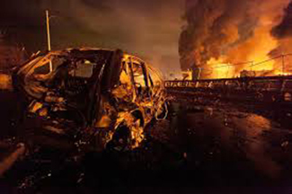
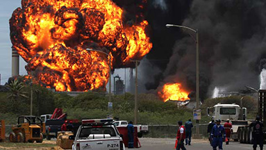
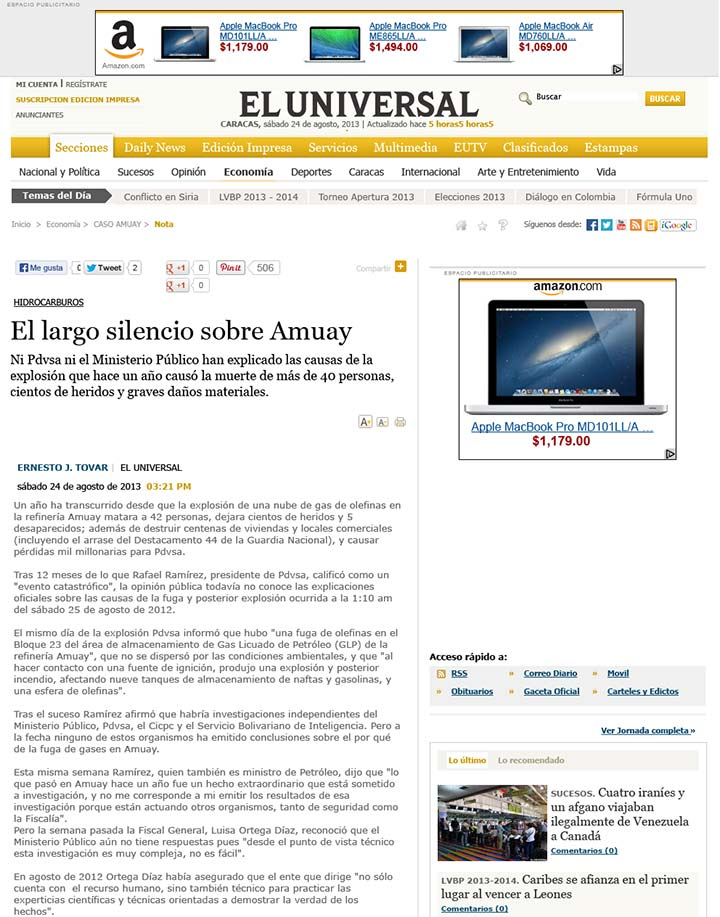
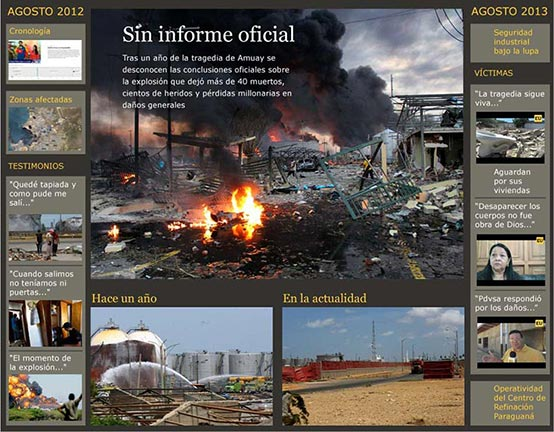
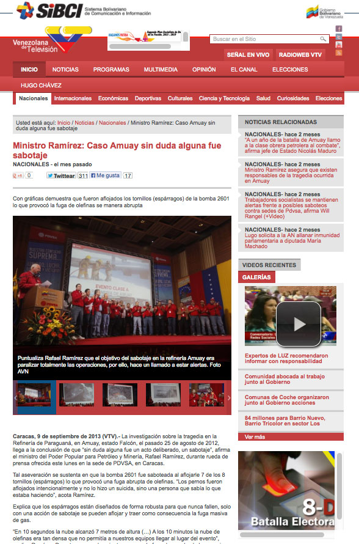
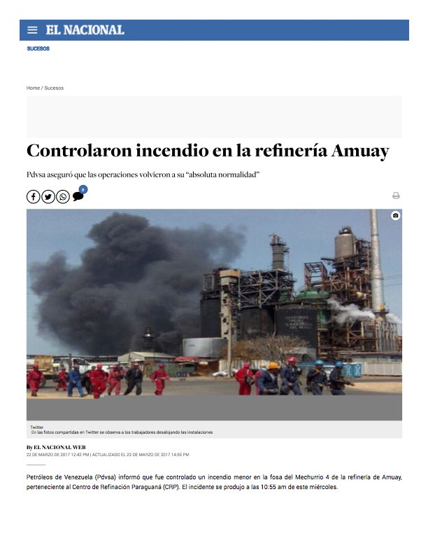

EMILIO HOME
LA TRAGEDIA DE AMUAY
edo. Falcón, Venezuela
Agosto 25, 2012
Ver también:
Videoarte de Benno Mauler & Emilio Mendoza:
Aloha Tacoa,
1985
Tragedia de
Tacoa
, diciembre, 1982, y octubre, 2013
Tragedia del río
Guarapiche
, febrero, 2012
Incendio de
El Palito
, noviembre, 2013
AMUAY, 2012
 
El Universal
, Caracas, 24 de agosto, 2013


El Gobierno dice que fue sabotaje de la derecha, VTV, 9 de septiembre, 2013:

Amuay de nuevo, 22-03-2017:
